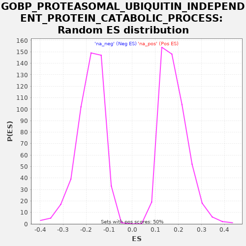

| | | Dataset | X_enriched_genes copy |
| Phenotype | NoPhenotypeAvailable |
| Upregulated in class | na_pos |
| GeneSet | GOBP_PROTEASOMAL_UBIQUITIN_INDEPENDENT_PROTEIN_CATABOLIC_PROCESS |
| Enrichment Score (ES) | 0.6209689 |
| Normalized Enrichment Score (NES) | 3.4263582 |
| Nominal p-value | 0.0 |
| FDR q-value | 0.0 |
| FWER p-Value | 0.0 |
Table: GSEA Results Summary
 Fig 1: Enrichment plot: GOBP_PROTEASOMAL_UBIQUITIN_INDEPENDENT_PROTEIN_CATABOLIC_PROCESS
Fig 1: Enrichment plot: GOBP_PROTEASOMAL_UBIQUITIN_INDEPENDENT_PROTEIN_CATABOLIC_PROCESS
Profile of the Running ES Score & Positions of GeneSet Members on the Rank Ordered List

Fig 2: GOBP_PROTEASOMAL_UBIQUITIN_INDEPENDENT_PROTEIN_CATABOLIC_PROCESS: Random ES distribution
Gene set null distribution of ES for GOBP_PROTEASOMAL_UBIQUITIN_INDEPENDENT_PROTEIN_CATABOLIC_PROCESS